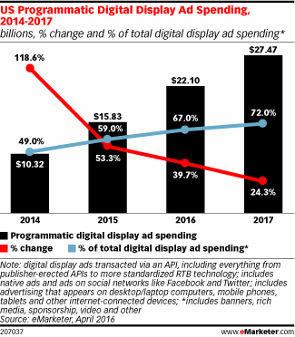

Si consideri il seguente grafico preso da un post della società eMarketer.
Il grafico riporta alcune informazioni sulle spese per la pubblicità digitale programmatica. Ovvero a pubblicità che è acquistata in maniera automatica tramite appositi sw.
Analisi
Analizzare il grafico sopra riportato secondo gli aspetti seguenti:Question:- è stata definita chiaramente una domanda (o più di una) a cui la visualizzazione risponde?
L'obiettivo generale (implicito) è mostrare come la pubblicità programmatica sia in aumento e come si pone rispetto alla spesa totale.
Data:- i dati mostrati sono validi e supportano la domanda?
I dati mostrati sono parziali, in particolare:
- non compare la spesa totale, ma solo la spesa programmatica e la percentuale che quest'ultima rappresenta rispetto al totale
- c'è un riferimento ad un incremento del 118% nel 2014 ma non viene mostrato il valore assoluto dell'anno precedente.
I dati sono di aprile 2016 ma sono riportati anche i dati per il 2017, evidentemente si tratta di proiezioni ma questo non è indicato.
Visual:le caratteristiche visuali sono usate appropriatamente?
Riguardo gli aspetti visuali si valuti l’integrità visuale secondo i tre aspetti:
Proportionality:- le misure sono riportate in maniera uniformemente proporzionale?
Le dimensioni delle barre sono proporzionali.
Le linee (sovrapposte alle barre) utilizzano un proprio asse che pare essere omogeneo per entrambe le serie.
Utility:- tutti gli elementi presenti nel grafico trasmettono informazioni utili?
Tutti gli elementi presenti portano informazioni utili
I valori percentuali riportano una cifra decimale che potrebbe essere eliminata.
I valori assoluti riportano due cifre decimali che potrebbero essere eliminate.
Clarity:- i dati del grafico sono chiaramente identificabili e comprensibili (opportunamente descritti)?
Il doppio asse implicito rende difficile la lettura.
I numeri riportati tendono a sovrapporsi e le cifre decimali inutili peggiorano la leggibilità.
La linea rossa sembra indicare una tendenza in calo, ma se si osservano le barre la crescita è pressochè costante (in valore assoluto) negli anni, ovviamente la crescita in % è in calo facendo riferimento a denominatori via via più grandi negli anni.
Design
Riprogettare la visualizzazione in modo da risolvere i problemi evidenziati nell'analisi.
In particolare evidenziare come le spese in pubblicità digitale programmatica si confrontano con le spese totali in pubblicità digitale, nel corso degli ultimi anni.
Una prima soluzione è basata su un diagramma a barre che riporta i valori di spesa programmatica e non.
Una seconda soluzione è basata su un diagramma a linee che riporta i valori di spesa programmatica e non.
Inserire le risposte all'interno del presente file,
in particolare negli elementi <div>
che hanno come classe answer.